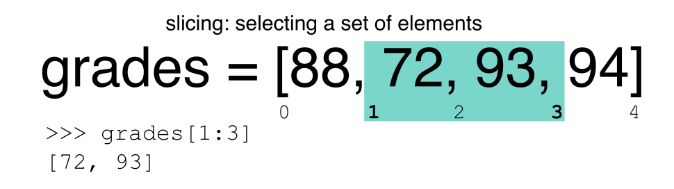

Indexing, Slicing and Subsetting DataFrames in Python
Overview
Teaching: 30 min
Exercises: 30 minQuestions
How can I access specific data within my data set?
How can Python and Pandas help me to analyse my data?
Objectives
Describe what 0-based indexing is.
Manipulate and extract data using column headings and index locations.
Employ slicing to select sets of data from a DataFrame.
Employ label and integer-based indexing to select ranges of data in a dataframe.
Reassign values within subsets of a DataFrame.
Create a copy of a DataFrame.
Query / select a subset of data using a set of criteria using the following operators:
==,!=,>,<,>=,<=.Locate subsets of data using masks.
Describe BOOLEAN objects in Python and manipulate data using BOOLEANs.
In the first episode of this lesson, we read a CSV file into a pandas’ DataFrame. We learned how to:
- save a DataFrame to a named object,
- perform basic math on data,
- calculate summary statistics, and
- create plots based on the data we loaded into pandas.
In this lesson, we will explore ways to access different parts of the data using:
- indexing,
- slicing, and
- subsetting.
Loading our data
We will continue to use the surveys dataset that we worked with in the last episode. Let’s reopen and read in the data again:
# Make sure pandas is loaded
import pandas as pd
# Read in the survey CSV
surveys_df = pd.read_csv("data/surveys.csv")
Indexing and Slicing in Python
We often want to work with subsets of a DataFrame object. There are different ways to accomplish this including: using labels (column headings), numeric ranges, or specific x,y index locations.
Selecting data using Labels (Column Headings)
We use square brackets [] to select a subset of a Python object. For example,
we can select all data from a column named species_id from the surveys_df
DataFrame by name. There are two ways to do this:
# TIP: use the .head() method we saw earlier to make output shorter
# Method 1: select a 'subset' of the data using the column name
surveys_df['species_id']
# Method 2: use the column name as an 'attribute'; gives the same output
surveys_df.species_id
We can also create a new object that contains only the data within the
species_id column as follows:
# Creates an object, surveys_species, that only contains the `species_id` column
surveys_species = surveys_df['species_id']
We can pass a list of column names too, as an index to select columns in that order. This is useful when we need to reorganize our data.
NOTE: If a column name is not contained in the DataFrame, an exception (error) will be raised.
# Select the species and plot columns from the DataFrame
surveys_df[['species_id', 'plot_id']]
# What happens when you flip the order?
surveys_df[['plot_id', 'species_id']]
# What happens if you ask for a column that doesn't exist?
surveys_df['speciess']
Python tells us what type of error it is in the traceback, at the bottom it says
KeyError: 'speciess' which means that speciess is not a valid column name (nor a valid key in
the related Python data type dictionary).
Reminder
The Python language and its modules (such as Pandas) define reserved words that should not be used as identifiers when assigning objects and variable names. Examples of reserved words in Python include Boolean values
TrueandFalse, operatorsand,or, andnot, among others. The full list of reserved words for Python version 3 is provided at https://docs.python.org/3/reference/lexical_analysis.html#identifiers.When naming objects and variables, it’s also important to avoid using the names of built-in data structures and methods. For example, a list is a built-in data type. It is possible to use the word ‘list’ as an identifier for a new object, for example
list = ['apples', 'oranges', 'bananas']. However, you would then be unable to create an empty list usinglist()or convert a tuple to a list usinglist(sometuple).
Extracting Range based Subsets: Slicing
Reminder
Python uses 0-based indexing.
Let’s remind ourselves that Python uses 0-based
indexing. This means that the first element in an object is located at position
0. This is different from other tools like R and Matlab that index elements
within objects starting at 1.
# Create a list of numbers:
a = [1, 2, 3, 4, 5]

Challenge - Extracting data
What value does the code below return?
a[0]How about this:
a[5]In the example above, calling
a[5]returns an error. Why is that?What about?
a[len(a)]
Slicing Subsets of Rows in Python
Slicing using the [] operator selects a set of rows and/or columns from a
DataFrame. To slice out a set of rows, you use the following syntax:
data[start:stop]. When slicing in pandas the start bound is included in the
output. The stop bound is one step BEYOND the row you want to select. So if you
want to select rows 0, 1 and 2 your code would look like this:
# Select rows 0, 1, 2 (row 3 is not selected)
surveys_df[0:3]
The stop bound in Python is different from what you might be used to in languages like Matlab and R.
# Select the first 5 rows (rows 0, 1, 2, 3, 4)
surveys_df[:5]
# Select the last element in the list
# (the slice starts at the last element, and ends at the end of the list)
surveys_df[-1:]
We can also reassign values within subsets of our DataFrame.
But before we do that, let’s look at the difference between the concept of copying objects and the concept of referencing objects in Python.
Copying Objects vs Referencing Objects in Python
Let’s start with an example:
# Using the 'copy() method'
true_copy_surveys_df = surveys_df.copy()
# Using the '=' operator
ref_surveys_df = surveys_df
You might think that the code ref_surveys_df = surveys_df creates a fresh
distinct copy of the surveys_df DataFrame object. However, using the =
operator in the simple statement y = x does not create a copy of our
DataFrame. Instead, y = x creates a new variable y that references the
same object that x refers to. To state this another way, there is only
one object (the DataFrame), and both x and y refer to it.
In contrast, the copy() method for a DataFrame creates a true copy of the
DataFrame.
Let’s look at what happens when we reassign the values within a subset of the DataFrame that references another DataFrame object:
# Assign the value `0` to the first three rows of data in the DataFrame
ref_surveys_df[0:3] = 0
Let’s try the following code:
# ref_surveys_df was created using the '=' operator
ref_surveys_df.head()
# surveys_df is the original dataframe
surveys_df.head()
What is the difference between these two dataframes?
When we assigned the first 3 columns the value of 0 using the
ref_surveys_df DataFrame, the surveys_df DataFrame is modified too.
Remember we created the reference ref_survey_df object above when we did
ref_survey_df = surveys_df. Remember surveys_df and ref_surveys_df
refer to the same exact DataFrame object. If either one changes the object,
the other will see the same changes to the reference object.
To review and recap:
-
Copy uses the dataframe’s
copy()methodtrue_copy_surveys_df = surveys_df.copy() -
A Reference is created using the
=operatorref_surveys_df = surveys_df
Okay, that’s enough of that. Let’s create a brand new clean dataframe from the original data CSV file.
surveys_df = pd.read_csv("data/surveys.csv")
Slicing Subsets of Rows and Columns in Python
We can select specific ranges of our data in both the row and column directions using either label or integer-based indexing.
locis primarily label based indexing. Integers may be used but they are interpreted as a label.ilocis primarily integer based indexing
To select a subset of rows and columns from our DataFrame, we can use the
iloc method. For example, we can select month, day and year (columns 2, 3
and 4 if we start counting at 1), like this:
# iloc[row slicing, column slicing]
surveys_df.iloc[0:3, 1:4]
which gives the output
month day year
0 7 16 1977
1 7 16 1977
2 7 16 1977
Notice that we asked for a slice from 0:3. This yielded 3 rows of data. When you ask for 0:3, you are actually telling Python to start at index 0 and select rows 0, 1, 2 up to but not including 3.
Let’s explore some other ways to index and select subsets of data:
# Select all columns for rows of index values 0 and 10
surveys_df.loc[[0, 10], :]
# What does this do?
surveys_df.loc[0, ['species_id', 'plot_id', 'weight']]
# What happens when you type the code below?
surveys_df.loc[[0, 10, 35549], :]
NOTE: Labels must be found in the DataFrame or you will get a KeyError.
Indexing by labels loc differs from indexing by integers iloc.
With loc, both the start bound and the stop bound are inclusive. When using
loc, integers can be used, but the integers refer to the
index label and not the position. For example, using loc and select 1:4
will get a different result than using iloc to select rows 1:4.
We can also select a specific data value using a row and
column location within the DataFrame and iloc indexing:
# Syntax for iloc indexing to finding a specific data element
dat.iloc[row, column]
In this iloc example,
surveys_df.iloc[2, 6]
gives the output
'F'
Remember that Python indexing begins at 0. So, the index location [2, 6] selects the element that is 3 rows down and 7 columns over in the DataFrame.
Challenge - Range
What happens when you execute:
surveys_df[0:1]surveys_df[:4]surveys_df[:-1]What happens when you call:
surveys_df.iloc[0:4, 1:4]surveys_df.loc[0:4, 1:4]
- How are the two commands different?
Subsetting Data using Criteria
We can also select a subset of our data using criteria. For example, we can select all rows that have a year value of 2002:
surveys_df[surveys_df.year == 2002]
Which produces the following output:
record_id month day year plot_id species_id sex hindfoot_length weight
33320 33321 1 12 2002 1 DM M 38 44
33321 33322 1 12 2002 1 DO M 37 58
33322 33323 1 12 2002 1 PB M 28 45
33323 33324 1 12 2002 1 AB NaN NaN NaN
33324 33325 1 12 2002 1 DO M 35 29
...
35544 35545 12 31 2002 15 AH NaN NaN NaN
35545 35546 12 31 2002 15 AH NaN NaN NaN
35546 35547 12 31 2002 10 RM F 15 14
35547 35548 12 31 2002 7 DO M 36 51
35548 35549 12 31 2002 5 NaN NaN NaN NaN
[2229 rows x 9 columns]
Or we can select all rows that do not contain the year 2002:
surveys_df[surveys_df.year != 2002]
We can define sets of criteria too:
surveys_df[(surveys_df.year >= 1980) & (surveys_df.year <= 1985)]
Python Syntax Cheat Sheet
We can use the syntax below when querying data by criteria from a DataFrame. Experiment with selecting various subsets of the “surveys” data.
- Equals:
== - Not equals:
!= - Greater than, less than:
>or< - Greater than or equal to
>= - Less than or equal to
<=
Challenge - Queries
Select a subset of rows in the
surveys_dfDataFrame that contain data from the year 1999 and that contain weight values less than or equal to 8. How many rows did you end up with? What did your neighbor get?You can use the
isincommand in Python to query a DataFrame based upon a list of values as follows:surveys_df[surveys_df['species_id'].isin([listGoesHere])]Use the
isinfunction to find all plots that contain particular species in the “surveys” DataFrame. How many records contain these values?
Experiment with other queries. Create a query that finds all rows with a weight value > or equal to 0.
The
~symbol in Python can be used to return the OPPOSITE of the selection that you specify in Python. It is equivalent to is not in. Write a query that selects all rows with sex NOT equal to ‘M’ or ‘F’ in the “surveys” data.
Using masks to identify a specific condition
A mask can be useful to locate where a particular subset of values exist or
don’t exist - for example, NaN, or “Not a Number” values. To understand masks,
we also need to understand BOOLEAN objects in Python.
Boolean values include True or False. For example,
# Set x to 5
x = 5
# What does the code below return?
x > 5
# How about this?
x == 5
When we ask Python whether x is greater than 5, it returns False.
This is Python’s way to say “No”. Indeed, the value of x is 5,
and 5 is not greater than 5.
To create a boolean mask:
- Set the True / False criteria (e.g.
values > 5 = True) - Python will then assess each value in the object to determine whether the value meets the criteria (True) or not (False).
- Python creates an output object that is the same shape as the original
object, but with a
TrueorFalsevalue for each index location.
Let’s try this out. Let’s identify all locations in the survey data that have
null (missing or NaN) data values. We can use the isnull method to do this.
The isnull method will compare each cell with a null value. If an element
has a null value, it will be assigned a value of True in the output object.
pd.isnull(surveys_df)
A snippet of the output is below:
record_id month day year plot_id species_id sex hindfoot_length weight
0 False False False False False False False False True
1 False False False False False False False False True
2 False False False False False False False False True
3 False False False False False False False False True
4 False False False False False False False False True
[35549 rows x 9 columns]
To select the rows where there are null values, we can use the mask as an index to subset our data as follows:
# To select just the rows with NaN values, we can use the 'any()' method
surveys_df[pd.isnull(surveys_df).any(axis=1)]
Note that the weight column of our DataFrame contains many null or NaN
values. We will explore ways of dealing with this in Lesson 03.
We can run isnull on a particular column too. What does the code below do?
# What does this do?
empty_weights = surveys_df[pd.isnull(surveys_df['weight'])]['weight']
print(empty_weights)
Let’s take a minute to look at the statement above. We are using the Boolean
object pd.isnull(surveys_df['weight']) as an index to surveys_df. We are
asking Python to select rows that have a NaN value of weight.
Challenge - Putting it all together
Create a new DataFrame that only contains observations with sex values that are not female or male. Assign each sex value in the new DataFrame to a new value of ‘x’. Determine the number of null values in the subset.
Create a new DataFrame that contains only observations that are of sex male or female and where weight values are greater than 0. Create a stacked bar plot of average weight by plot with male vs female values stacked for each plot.
Key Points
In Python, portions of data can be accessed using indices, slices, column headings, and condition-based subsetting.
Python uses 0-based indexing, in which the first element in a list, tuple or any other data structure has an index of 0.
Pandas enables common data exploration steps such as data indexing, slicing and conditional subsetting.